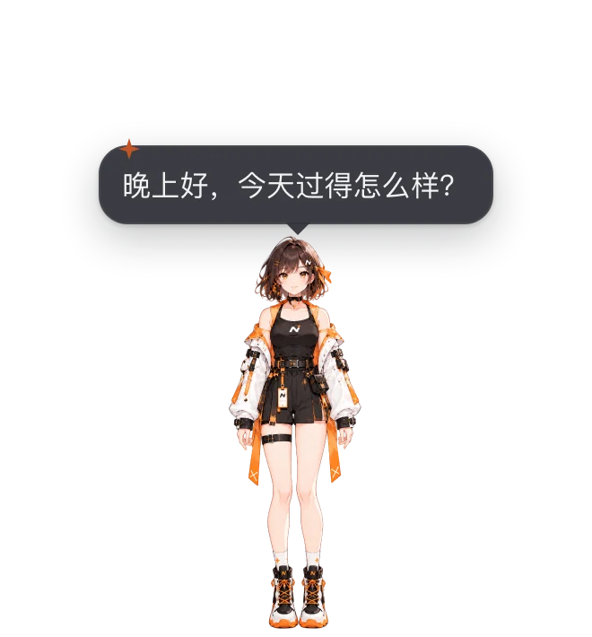

桌面角色
可选，可随时关掉：动作、显示方式、工具栏、大小与互动

诺米住在一个透明、置顶的小窗口里，只有角色本身可以点击，其余区域鼠标直接穿透到下面的窗口。
她会做什么
- 表情与动作：开心、生气、难过、放松等表情随对话和任务状态切换；会眨眼、呼吸、视线跟随鼠标，说话时口型同步。她有 43 个命名动作（见下文「动作」）：任务完成会点赞、失败会道歉，思考时托腮、工具运行时打字，闲着会张望、哼歌、打哈欠。AI 也可以调用工具让她做动作、换表情。
- 互动：悬停、摸头、单击、双击各有反应（表情 + 动作 + 台词），双击还会打开对话窗口。按住可以拖动；开启「重力与落地」后松手会落到任务栏 / Dock 上并回弹。窗口贴近屏幕右边时，工具栏和气泡会换到角色左侧，贴近左边时换到右侧。
- 气泡：AI 回复的前一两句显示在她身边，长回复显示「查看全文」，点击打开对话窗口。可以在互动设置里关闭。
- 拖文件给她：把文件拖到她身上，她会总结内容（气泡里一句话，完整摘要写进对话窗口）。
动作
诺米有 43 个命名动作（packages/avatar-runtime/src/rig/actions.ts），托盘「诺米动作」菜单里可以让她做其中常用的几个。AI 工具 avatar_gesture / avatar_emotion 与应用内的提醒只说语义名（手势 thumbsUp、shakeHead，情绪 happy，活动 thinking 等，词表见 角色包契约），由角色包的 mapping.json（官方包 characters/nomi/mapping.json）翻译成下表的动作；角色包没有映射的手势与情绪不会表现。
| 动作 | 名称 | 类别 | 时长 | 优先级 | 触发场景 | 应用内自动触发 |
|---|---|---|---|---|---|---|
wave | 挥手 | 问候 | 2.3s | 1 | 问候 / 早安 / 首次打开 / 用户说“你好” | 启动 / 问候；文本含“你好 / 再见”；点击手部 |
hello | 打招呼 | 问候 | 1.9s | 1 | 界面首次出现的轻招呼（点头 + 小幅挥手） | 界面首次出现（启动问候） |
nod | 点头 | 回应 | 1.2s | 1 | 回答“好 / 明白了”、确认 | 回复含“好的 / 当然”；点击头部；摸头 |
shake_head | 摇头 | 回应 | 1.4s | 1 | 否定、“不行 / 没有” | 点击裙摆（不高兴）；回复里出现否定 / 难过的情绪 |
bow | 鞠躬 | 问候 | 2.0s | 1 | 感谢 / 告别 / 道歉的礼貌版 | 回复含“谢谢 / 抱歉” |
salute | 敬礼 | 问候 | 1.9s | 1 | 收到指令 / “收到！” | — |
think | 托腮思考 | 思考 | 3.4s（保持） | 1 | AI 思考中 / 长时间等待 | AI 思考 / 等待模型（保持，回复完成时放开） |
explain | 讲解 | 思考 | 2.6s | 1 | 长回答 / 讲解步骤（竖起食指） | 回复超过 280 字 |
eureka | 灵光一闪 | 思考 | 2.2s | 1 | 想到办法 / 找到答案 | — |
puzzled | 疑惑歪头 | 思考 | 2.4s | 1 | 听不懂 / 需要澄清 | — |
look_around | 张望 | 空闲 | 3.0s | 0 | 空闲随机 / 等待用户（手遮额头远眺） | 空闲随机 |
look_lr | 左顾右盼 | 空闲 | 2.6s | 0 | 空闲随机 | 空闲随机 |
peek | 偷看 | 情绪 | 2.6s | 0 | 空闲随机（害羞地偷看用户） | 空闲随机 |
heart | 比心 | 情绪 | 2.6s | 1 | 表达喜欢 / 被夸奖 / 摸头 | — |
blow_kiss | 送飞吻 | 情绪 | 2.4s | 1 | 告别 / 感谢 | — |
shy | 害羞 | 情绪 | 2.8s | 1 | 被夸奖 / 被摸头太久 | — |
cover_face | 捂脸 | 情绪 | 2.6s | 1 | 尴尬 / 出错后的不好意思 | — |
sorry | 道歉 | 情绪 | 2.8s | 3 | 任务失败 / 出错（双手交叠在身前，轻轻低头） | 任务 / 端点失败（灵动岛同步） |
surprise | 惊讶 | 反应 | 1.8s | 2 | 拖入文件 / 突然的事件 | 拖入文件；点击脸 / 身体；落地 |
sigh | 叹气 | 情绪 | 3.0s | 1 | 长时间失败 / 无聊 | — |
pray | 合十 | 情绪 | 2.8s | 1 | 感谢 / 拜托 / 祈祷 | — |
smug | 得意 | 情绪 | 2.4s | 1 | 做对难题 / 任务一次成功 | — |
aggrieved | 委屈 | 情绪 | 3.0s | 1 | 被批评 / 反复失败 | — |
tears | 流泪 | 情绪 | 3.0s | 1 | 感动 / 很难过 | — |
angry | 生气（轻微） | 情绪 | 2.2s | 1 | 被打断 / 连续失败 | — |
cold_sweat | 冷汗 | 情绪 | 2.4s | 1 | 紧张 / 尴尬 / 超时 | — |
daze | 发呆 | 空闲 | 3.4s | 0 | 空闲随机 | 空闲随机 |
cheer | 加油握拳 | 庆祝 | 2.2s | 1 | 鼓励用户 / 开始新任务 | 强烈开心的回复；“太好了 / 恭喜” |
thumbs_up | 点赞 | 庆祝 | 2.2s | 3 | 任务完成 / 用户做得好 | 任务 / 端点完成（灵动岛同步） |
peace | 剪刀手 | 庆祝 | 2.2s | 1 | 拍照 / 自拍 / 开心 | — |
ok_hand | OK 手势 | 庆祝 | 2.2s | 1 | 确认 / 没问题 / OK | — |
celebrate | 庆祝（双手举高） | 庆祝 | 2.6s | 3 | 任务全部完成 / 里程碑 | 全部任务完成 |
clap | 鼓掌 | 庆祝 | 2.4s | 1 | 夸奖 / 用户完成目标 | 开心的回复；双击 |
hop | 开心跳动 | 庆祝 | 1.6s | 1 | 被点击 / 高兴 | 点击 |
wink | 眨眼 | 情绪 | 1.6s | 1 | 俏皮 / 彩蛋 | — |
tongue | 吐舌 | 情绪 | 1.8s | 1 | 调皮 / 小失误后的卖萌 | — |
cute | 卖萌 | 情绪 | 2.4s | 1 | 被摸头 / 撒娇 | — |
work | 打字工作 | 工作 | 2.4s（保持） | 1 | 工具运行中 / 正在写代码 | 工具运行中（保持） |
yawn | 打哈欠 | 休息 | 3.0s | 0 | 夜间 / 长时间空闲 | 夜间 / 长时间空闲 |
stretch | 伸懒腰 | 休息 | 3.2s | 0 | 长时间空闲 / 久坐提醒 | 长时间空闲 |
goodnight | 晚安 | 休息 | 3.4s（保持） | 1 | 深夜 / 长时间无操作 / 说晚安 | 深夜空闲（保持） |
listen | 倾听 | 思考 | 2.6s（保持） | 1 | 用户正在输入 / 语音录入 | — |
peek_note | 哼歌 | 空闲 | 3.0s | 0 | 空闲随机 / 播放音乐 | 空闲随机 |
| 优先级：0 空闲行为 · 1 普通 · 2 互动反应（点击 / 拖文件）· 3 任务事件（完成 / 失败）。高优先级会替换正在播放的动作，低优先级默认丢弃。「保持」类动作（托腮思考、打字工作、倾听、晚安）会停在末姿态，直到回复完成、被新动作替换或超过最长保持时间。 |
触发规则
- 任务事件：一轮任务完成 → 点赞；全部完成 → 庆祝；失败 → 道歉。
- 对话：等待模型 → 托腮思考；工具运行 → 打字工作；回复超过 280 字 → 讲解；回复里的「你好 / 谢谢 / 恭喜」等关键词 → 挥手 / 鞠躬 / 加油。
- 互动：点击、双击、摸头、拖入文件各有对应动作。
- 空闲：安静 18 秒后不时随机做一个（张望 / 左顾右盼 / 偷看 / 发呆 / 哼歌）；空闲超过 1.5 分钟可能打哈欠，超过 2.5 分钟可能伸懒腰；23:00–06:00 偏向打哈欠 / 晚安。说话、思考或有动作在播放时不会触发；开启系统「减少动态效果」后完全不触发。
显示方式
默认显示一张静态立绘。「设置 → 通用 → 启动与窗口」里打开「诺米动画（Rive）」后用 Rive 动画显示（会多占一些内存和显卡）；动画素材第一次开启时下载，下载完成前或失败时仍显示静态立绘。
只内置诺米一个角色，不提供角色切换或导入自己的模型。工具栏「更多 → 致谢 / Credits」列出角色与图标的作者与许可。品牌规则见 品牌规范。
工具栏
角色旁边的竖向工具栏：AI 对话、语音（点按静音，右键语音偏好）等常用按钮，其余在「更多」里（大小、关闭诺米、关闭应用等）。空闲时淡出，光标靠近时出现；靠近屏幕边缘会自动翻到另一侧。
关闭诺米后她从桌面隐藏、不再播放语音和监听唤醒词，提醒改由 灵动岛 或系统通知送达；在「设置 → 通用 → 启动与窗口」里可以重新打开。
大小
默认 50%，可调 30%–150%（以 420×450 的角色框为 100%）；小屏幕上上限会按工作区自动压低。
| 入口 | 用法 |
|---|---|
| Ctrl / ⌘ + 滚轮 | 光标在角色上时按住 Ctrl（macOS 为 ⌘）滚动 |
| 右键菜单 | 在角色上右键 → 放大 / 缩小 |
| 设置 → 通用 | 「启动与窗口」里的「诺米大小」滑块与重置 |
缩放时脚底中心在屏幕上不动；数值保存在本机，下次启动保持。
互动设置
托盘 →「互动设置（穿透 / 重力 / 散步）…」：
| 选项 | 默认 | 说明 |
|---|---|---|
| 透明区域点击穿透 | 开 | 透明像素上的点击交给下面的窗口 |
| 重力与落地 | 关 | 松手后落到任务栏 / Dock 上方，撞墙回弹 |
| 偶尔散步 | 关 | 不时沿屏幕底边走一小段 |
| 触摸反应 | 开 | 悬停、摸头、点击的反应 |
| 视线跟随全局鼠标 | 开 | 光标在窗口外时也会看向它 |
| 气泡显示 AI 回复 | 开 | 回复显示在她身边的气泡里 |
新增一个动作
- 在
actions.ts的ACTIONS里加一项：id（英文小写下划线）、label（界面文案 key）、category、dur、trigger与轨道；中文名加到packages/i18n/src/locales/zh/ui/对应的文件，英文同步加到en。 - 只改动作与姿态参数，不改图层、锚点或布局（品牌锁）。
- 在本页的表里补一行，并把上面的动作数改对：
packages/renderer/tests/mascot/motionDocs.test.ts会检查本页列出了每个动作的 id 和中文名。 - 想让它自动触发：在
packages/avatar-runtime/src/expressionDirector.ts（事件 → 动作）或src/rig/idleBehavior.ts（空闲池）接线。
实现
- 角色引擎：
packages/avatar-runtime（动作src/rig/actions.ts，分层骨架src/layeredRig.ts供sprite模式的角色包使用）；诺米窗口：packages/renderer。 - 窗口、拖动物理与大小：
apps/desktop-go/internal/core/mascot（controller.go、physics.go、mascot_size.go）。 - Linux 的点击穿透用窗口形状实现；Wayland 下拿不到全局光标位置。